本文目录 [隐藏]
- I. 免费观影指南
- II. 最佳观影清单推荐说明
- III. 辍学生 The Dropout (2022)
- IV. 金鱼妻 金魚妻 (2022)
- V. 解禁男女 모럴 센스 (2022)
- VI. 风骚律师 第六季 Better Call Saul Season 6 (2022)
- VII. 成瘾剂量 Dopesick (2021)
- VIII. 英雄联盟：双城之战 Arcane (2021)
- IX. 基地 Foundation (2021)
- X. 海岸村恰恰恰 갯마을 차차차 (2021)
- XI. 新世纪福音战士新剧场版：终（2021）
- XII. 浪客剑心 最终章 人诛篇 るろうに剣心 最終章 The Final (2021)
- XIII. 洛基 第一季 Loki Season 1 (2021)
- XIV. 全裸导演 第二季 全裸監督 シーズン2 (2021)
- XV. 早间新闻 The Morning Show (2019-2021)
- XVI. 爱，死亡和机器人（2019-2021）
- XVII. 禁忌女孩 Girl from Nowhere（2018-2021）
- XVIII. 无罪之最 El inocente (2021)
- XIX. 老友记 Friends（1994-2021）
- XX. 小谢尔顿（2017-2023）
- XXI. 了不起的麦瑟尔夫人（2017-2023）
- XXII. 暗黑 Dark（2017-2020）
- XXIII. 婚姻故事 Marriage Story (2019)
- XXIV. 超感猎杀(2015-2017)
- XXV. 浴血黑帮 Peaky Blinders （2013-2022）
- XXVI. 国土安全 Homeland（2011-2020）
- XXVII. 巴里·林登 Barry Lyndon (1975)
- XXVIII. 2001太空漫游 2001: A Space Odyssey (1968)
- XXIX. 机场支持（Netflix/HBO/Disney+..）
I. 免费观影指南
往期影视推荐清单；
II. 最佳观影清单推荐说明
深受年轻人喜爱的；像黑马一样的存在；优秀的剧本以及敬业的演员；长期霸占豆瓣高分（同期的国产剧 like shit），饱含奇趣，幽默，讽刺，口碑爆棚的Netflix/HBO/Disney+/Apple tv+/Hulu剧集！由毒奶收集整理的Trend & Top最佳观影推荐清单；另，一定程度上而言，正是因为观看难度之高（FQ或生肉等等），以至于评价起来特别用心；我相信你也会喜欢； via 毒奶；
这是一个会持续更新的清单，未来更多好看剧集将会汇聚于此；
如果你有好的影视推荐或在线观影网站，欢迎联系我们；

III. 辍学生 The Dropout (2022)
本剧改编自ABC News/ABC Radio的同名播客，讲述Elizabeth Holmes及她的公司Theranos如何崛起及坠落。Amanda Seyfried饰演Elizabeth Holmes，她曾经一度被形容为「下一个乔布斯」，因为她提出一项最新技术能够只抽取少量血液就能立即进行检验，并因此得到多个名人的投资。然而实际上她和公司皆没有硬实力达成此事，于是在利欲熏心下Elizabeth开始不停造假，一度推出了根本没法提供正确数据的验血机；最终一切被拆穿后，Elizabeth现正面临刑事指控，而不认罪的她可能被判长达20年的刑期。Naveen Andrews饰演Sunny Balwani，他是Elizabeth Holmes的商业拍档兼秘密男友，见证了Theranos的崛起及衰落。在《坏血》一书里，Balwani被指是造就公司里恐惧文化的原因之一。
辍学生 The Dropout (2022) 在线观看：低端影视；毒奶搜索；
IV. 金鱼妻 金魚妻 (2022)
NTR向；在一座豪华的公寓楼里，六个婚姻不幸的女人最终越界，走上了不忠的道路。这是一部 Netflix 原创剧集，改编自黑泽 R 的热门日本漫画，在集英社目前出版的《Grand Jump Mecha》中连载，以婚外情为主题。该剧集由筱原凉子（《非关正义》《派遣员的品格》）主演，Fuji Creative Corporation 负责制作。
豆瓣评分 5.9分；
V. 解禁男女 모럴 센스 (2022)
你认为是否存在完全平等的关系？在一段关系中，不知怎的，天平总是会向一方倾斜。这个爱情故事的主角是郑智宥（徐珠贤饰）和郑智厚（李濬荣饰），一名还没意识到自己有操控欲的女人，和一名具有强烈服从倾向的男人，两人由“特殊“游戏开始，逐渐发展成约会关系。
预告片让人浮想联翩、心潮翻涌，正片却打碎幻想，给了现实一击。不过，虽然尺度不大，但羞耻度满满，显然导演很懂美色迷人眼的道理，给了两位主演许多脸部特写和近镜头，截屏都不需要暂停。 浮南蕴北 看过 2022-02-11 17:24:04
VI. 风骚律师 第六季 Better Call Saul Season 6 (2022)
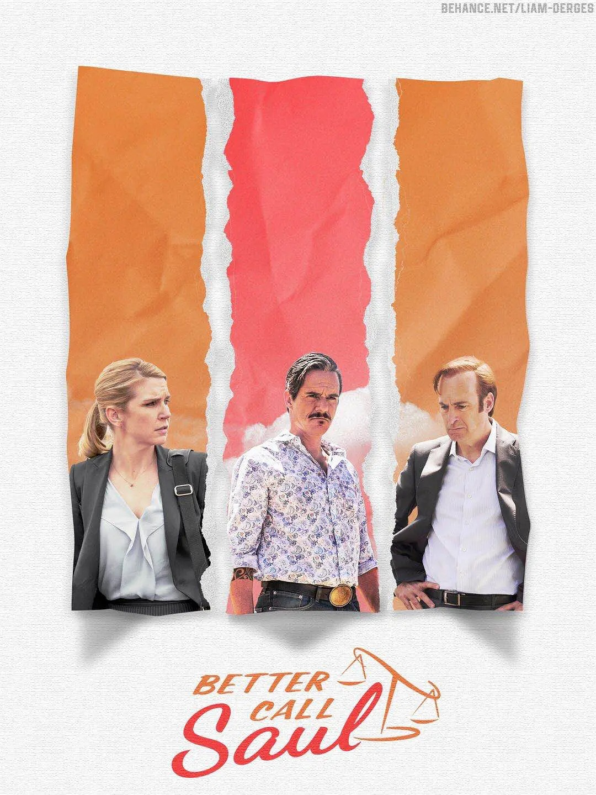
已推出；《风骚律师》第六季即最终季或将在2022年第一季度播出。AMC首席执行官乔什·萨潘在财报会议上透露，受疫情影响，AMC剧集的制作都有所延误。而《风骚律师》第六季可能会延后在2022年第一季度播出。该剧由文斯·吉里根担任制作，鲍勃·奥登科克主演。
鉴于故事过于精彩，主创可以考虑再拍几个系列，《绝命炸鸡》 《绝命叮叮》 《绝命DEA》。 Lantiany 想看 2020-03-10 17:35:29
VII. 成瘾剂量 Dopesick (2021)
该剧根据Beth Macy撰写的同名畅销书改编，迈克尔·基顿扮演老派医生塞缪尔·芬尼克斯，他以仁慈和同情心对待自己的工作，但他发现自己陷入了大制药公司致命的秘密之中。 via 豆瓣电影；
底层人民不仅很难拥有良好的教育、就业、医疗等资源 就连日常看病吃药 还要面临成为资本（药企）掘金试验品的风险… “现在我们发明出了人类历史上最伟大的止疼剂 我们只需要想出一种病理特征 就能让服用奥施康定的患者 双倍增加剂量” … 谁能想象本应是造福患者的“灵丹” 最后却成了递向他们的刀子 via Rachel S 看过 2021-10-16
VIII. 英雄联盟：双城之战 Arcane (2021)
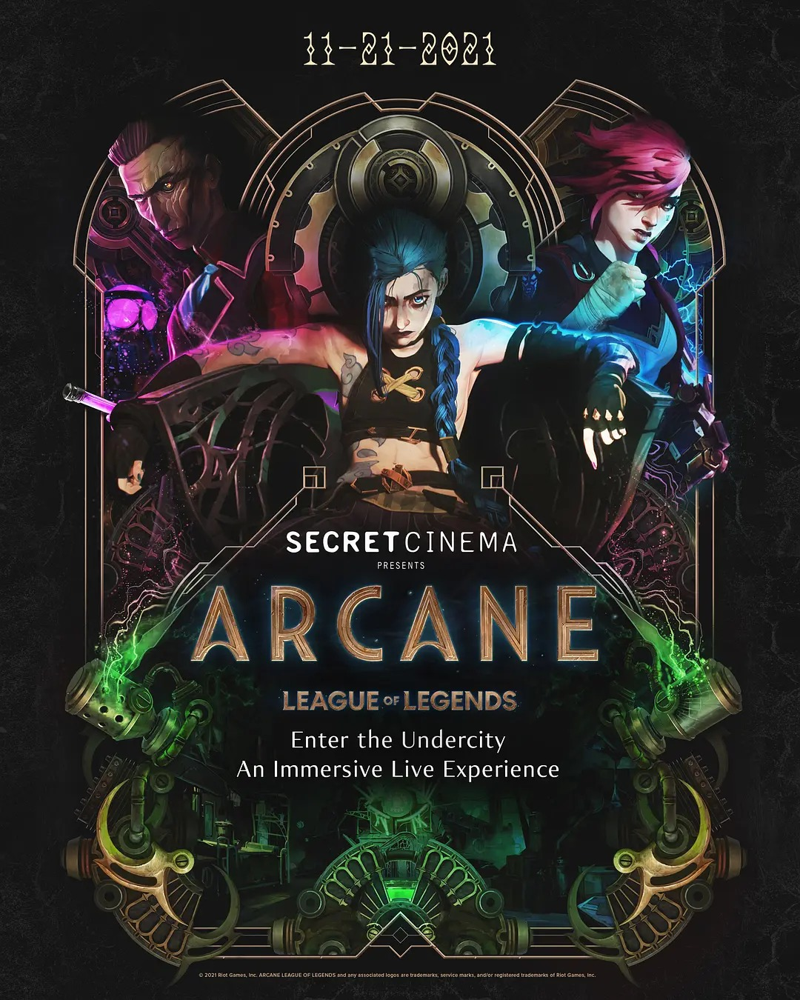
《英雄联盟：双城之战》是英雄联盟官方动画剧集，讲述的是在充满蒸汽朋克气息的乌托邦-皮尔特沃夫和由化学品驱动的地下城-祖安中，蔚和金克丝两姐妹，她们在一场激烈的冲突后发现两个人站在了彼此的对立面。她们从此分开，走上不同的道路，朝着不同的命运终点走去，但心中的羁绊又无时不刻地让姐妹二人想要破镜重圆。
赛博朋克的美式画风，质感画面都很nice，是不需要情怀也可以好评支持的优秀动画。Haleyrink1897 看过 2021-11-07
IX. 基地 Foundation (2021)
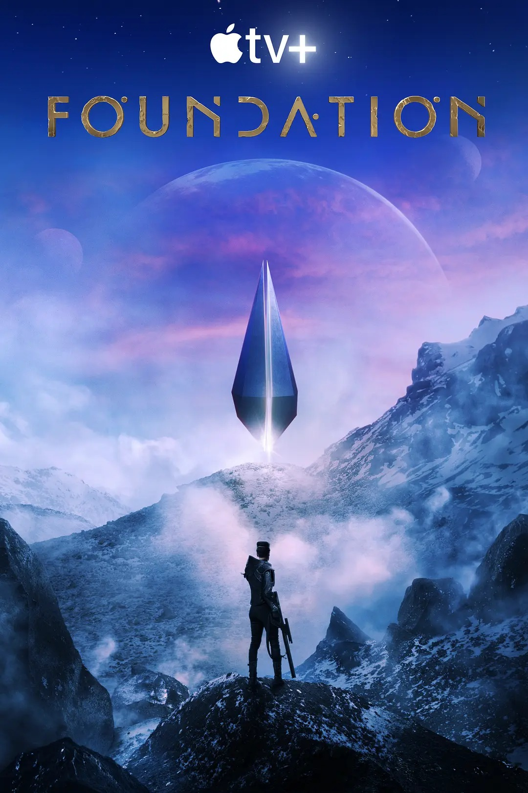
人类在这个小小的行星（他们称之为“地球”）上，建立了两百多个不同的行政区域（他们称之为“国家”），直到地球上诞生了第一个会思考的机器人。 via 豆瓣电影；
《基地》-小说，是美国作家艾萨克·阿西莫夫出版于1951年的科幻小说短篇集，“基地三部曲”的第一部，1955年曾以《千年计划》为名，收录在“双重王牌丛书”，第D-110号丛书。这部短篇集里其中的4篇故事，原载于1942年到1944年之间的《惊奇杂志》，第5篇则是集结成书时加进去的。 via 维基百科；
今年最期待的美剧了，和电影《沙丘》并列最期待科幻影视作品。 via 齐咏歆 看过 2021-09-24；
基地 Foundation (2021)在线观看：毒奶搜索；低端影视；
X. 海岸村恰恰恰 갯마을 차차차 (2021)
该剧改编自2004年的电影《我的百事通男友洪班长》，讲述来自大都市的牙医（申敏儿 饰）到充满人情味的海岸村开设牙医诊所，那里住着一位各方面都和她截然不同却颇具魅力的全能无业游民（金宣虎 饰）。 via 豆瓣电影；
是谁让我现在像小兔子一样蹦蹦跳跳，是《海岸村恰恰恰》 via 王小楼 看过 2021-09-05；
海岸村恰恰恰在线观看：毒奶搜索；
XI. 新世纪福音战士新剧场版：终（2021）
新·福音战士剧场版：终 シン・エヴァンゲリオン劇場版:│▌ (2021)
成为“第三次冲击”元凶的碇真嗣，变得像废人一样……真嗣还能振作起来吗？2012年《福音战士新剧场版：Q》之后，这部动画讲述了被封印的故事的后续。 via 豆瓣电影；
推荐理由：豆瓣9.7分，距离上一部剧场版已过去9年；
出品方：evangelion.co.jp/final.html
豆瓣链接：新·福音战士剧场版：终 シン・エヴァンゲリオン劇場版:│▌ (2021)
导演：庵野秀明 Hideaki Anno
上映日期: 2021-03-08(日本) / 2021-08-13(美国网络)
片长: 154分钟
出品方：evangelion.co.jp/final.html
豆瓣链接：新·福音战士剧场版：终 シン・エヴァンゲリオン劇場版:│▌ (2021)
导演：庵野秀明 Hideaki Anno
上映日期: 2021-03-08(日本) / 2021-08-13(美国网络)
片长: 154分钟
太棒了！没有旧作滤镜且不站cp的话应该可以得到完美观感，太过惊喜了。制作炸裂，分镜极佳，庵野这次应该玩够了吧，最后直接上了全系列名字的投影还有原画可还行，算是充满情怀又富有人情味的收尾了。意识流世界解救众人，带着父亲拥抱弱小的自己，迈向爱与和平的世界。其实大家都是孤独的人啊，但是他们终究都找到了自己的救赎。有被长大的真嗣帅到，居然是神木弟弟配音！熊光新歌太过好听了（我觉得都可以名流青史了 via 落日数羊 看过 2021-03-08
相似电影推荐：攻壳机动队，
XII. 浪客剑心 最终章 人诛篇 るろうに剣心 最終章 The Final (2021)
1879 年，剑心和朋友们面临有史以来最强的敌人：他曾经的连襟雪代缘及其手下 — 这群人发誓要复仇。
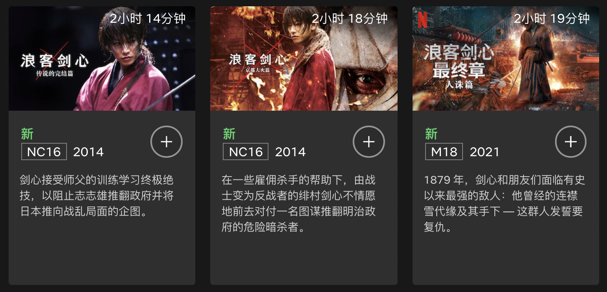
在线观看：毒奶搜索；Netflix；奈菲影视；低端影视（1-4全集）；
XIII. 洛基 第一季 Loki Season 1 (2021)
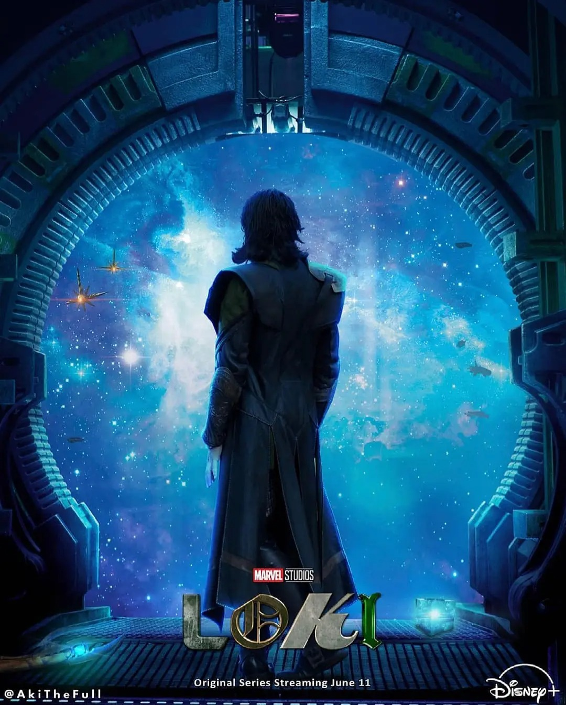
故事聚焦在《复仇者联盟4：终局之战》中，另一时空拿走空间宝石（Space Stone）的洛基，描述他作为一名恶作剧之神和变形者的身份，现身在人类历史中的多个时期，影响着历史事件。 via 豆瓣电影；
已于6月9日 在 Disney+ 上映；
洛基看完自己的一生，躺平了。 via EdMika 看过 2021-06-09
无限宝石当纸镇 宇宙魔方丢抽屉。 via 走路人 看过 2021-06-09
XIV. 全裸导演 第二季 全裸監督 シーズン2 (2021)
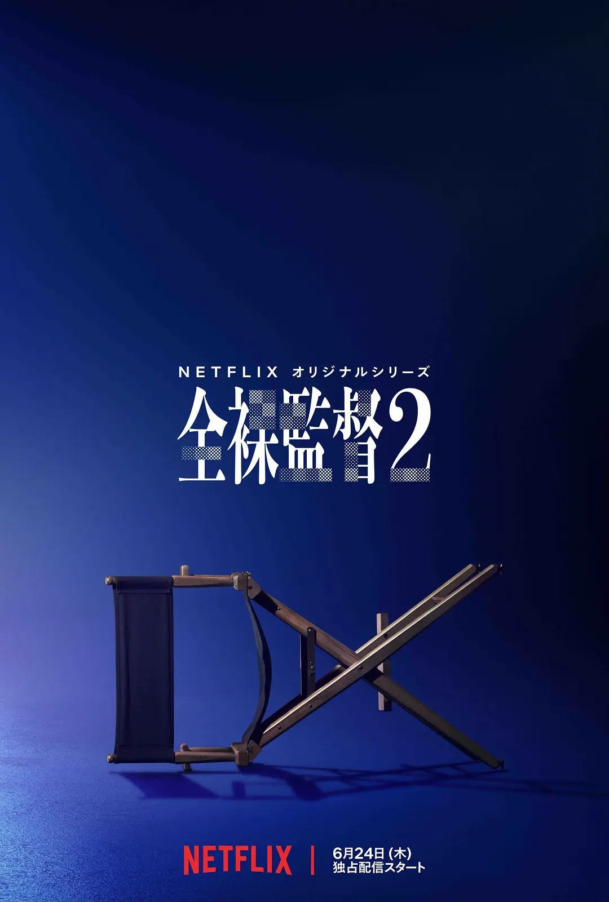
20 世纪 80 年代，经济泡沫正值高峰期，整个日本都对未来的可能性充满无限期待。早在办公室女职员和女大学生在东京朱莉安娜（“JULIANA'S TOKYO”）迪厅挥舞着羽毛扇疯狂起舞之前，在成人影片行业起初，就有一位企业家决意要制作成人影片，挑战日本老式的性文化规范，这个人就是“文化禁忌传播先驱”导演村西透。村西彻底改变了日本色情的概念，并与传奇 AV 女演员黑木香成为家喻户晓的明星。 via 豆瓣电影；
已在Netflix上映；
喂喂喂，兄弟姐妹们，说起来俗，但就是这样子。 关于人类的欲望本质， 有人只是单纯的转变成卵子，精子； 有人牛一些的转变成票子，车子…… 还有更高阶的人改变人类历史。 其实，这只是一个单纯的励志故事。 via 哼哼.floweray 2019-08-08
我也好想加入色情行业！ via Mafty Naveyu E 2019-08-08
XV. 早间新闻 The Morning Show (2019-2021)
早间新闻 第一季/第二季 The Morning Show Season 1/2 (2019-2021)
让我们揭开帷幕，聚焦每晨陪伴大众迎接新一天的新闻主播，走近早间新闻节目的台前幕后！剧集由詹妮弗·安妮斯顿、瑞茜·威瑟斯彭和史蒂夫·卡瑞尔领衔主演，以大胆直接的拍摄手法透视当代职场百态。 via 豆瓣电影；
在女主角们的高光时刻里，最打动人的却是那些一闪而过的配角：故意阻挠大老板接电话的人、不切镜头的人、高声报信的人、锁门的人……在这场虚拟的厄尔尼诺事件里，每一只小鱼都以自己的方式影响了世界6分钟。 via rice-burger 看过 2019-12-22
XVI. 爱，死亡和机器人（2019-2021）
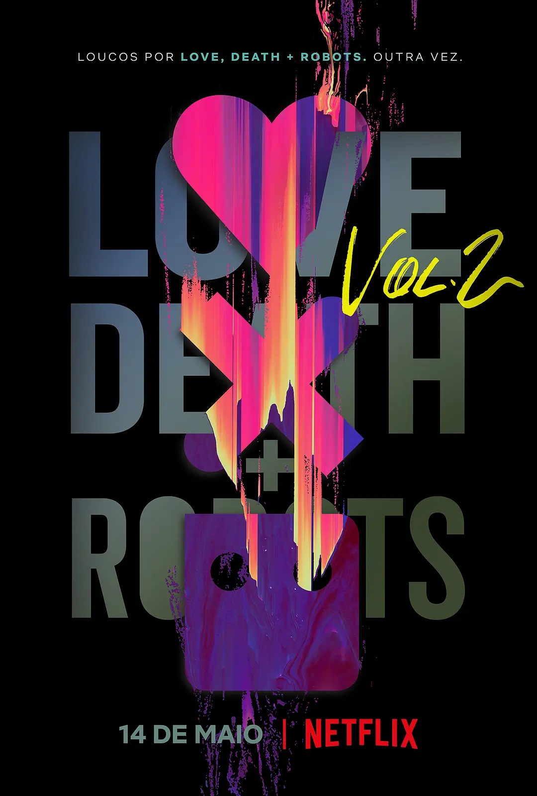
Love, Death & Robots Season 2 (2021)
《爱、死亡 & 机器人》是一部动画短片合集，涵盖科幻、奇幻、恐怖和喜剧等题材。每集都采用大胆的叙事手法，故事好看易懂，令人印象深刻。该剧集是第一部动画短片，由大卫·芬奇、蒂姆·米勒、珍妮弗·米勒和乔希·多宁担任监制，汇集了世界级的动画创作者和精彩的故事，定会为观众带来独特、震撼人心的观看体验。
最喜欢《齐马蓝》这集，有点道家哲学的意思，还很扣剧名的题，人性已经不是宇宙至高的智慧与爱了。每件艺术作品都是个体生命的记录，生命的极致在于回归本真，找到最初的自己。这是改编自威尔士作家的科幻小说，难怪这么好。 via 大奇特(Grinch)
XVII. 禁忌女孩 Girl from Nowhere（2018-2021）
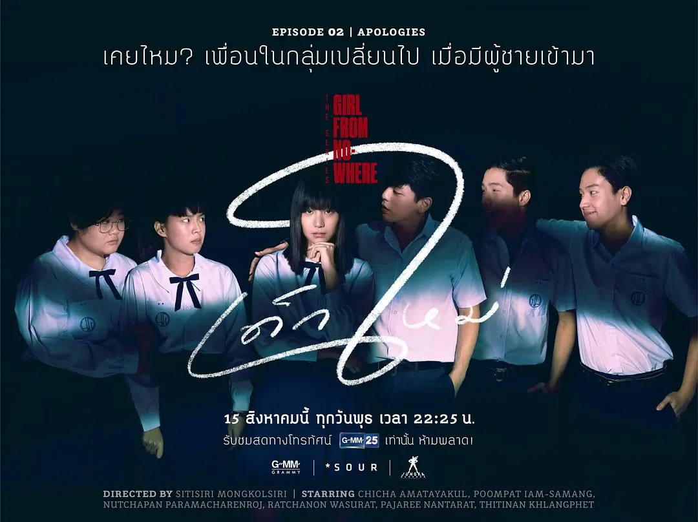
来路不明的转校生 / Girl from Nowhere
《禁忌女孩》（泰语：เด็กใหม่ The Series）是泰国一部奇幻、犯罪、惊悚、描述人性丑陋的电视剧，故事主角为一个名叫 Nanno 的神秘女孩，她每一集都会转校到不同地方，藉着荒诞的遭遇和校园生活揭露学生与教师的谎言和不端行为，引出人性的阴暗面。
推荐理由：豆瓣影评8.4高分，已出到第二季；
出品方：Netflix；
豆瓣链接：禁忌女孩 ；
社交账号：https://www.instagram.com/kittychicha/
在线观看：毒奶搜索；
出品方：Netflix；
豆瓣链接：禁忌女孩 ；
社交账号：https://www.instagram.com/kittychicha/
在线观看：毒奶搜索；
像伊甸园的蛇一样，我给你一个纵恶的机会，你选吗？话说泰剧拍青少年还真没让我失望过。by the way，女主的笑声是今年仅次于杀戮天使zack后第二个魔性的笑声。 via 疯窝子 2018-11-29
XVIII. 无罪之最 El inocente (2021)
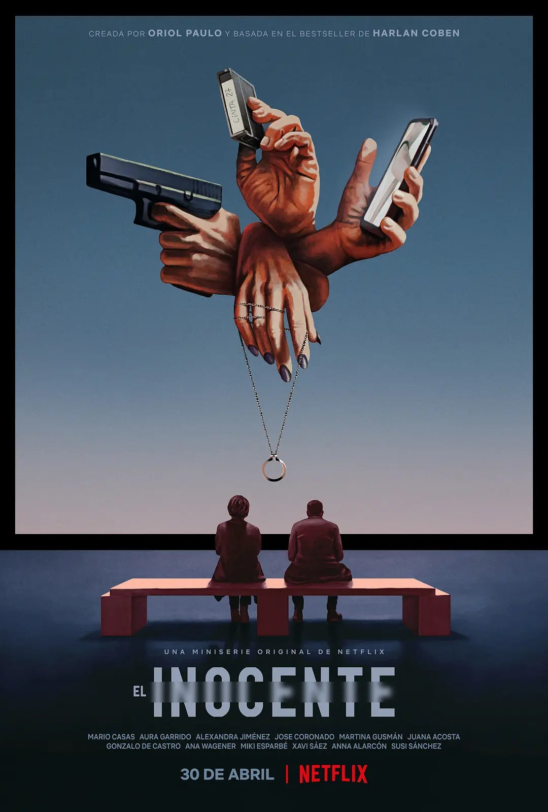
又名: 无辜者 / 第二声铃响 / The Innocent；
IMDb: tt10147644；
一名男子因意外杀人而陷入充满阴谋和谋杀的黑暗深渊。正当他找到爱和自由的时候，一通电话又唤起了他的噩梦。
看完减掉一星，又是头重脚轻的典型，只知道放，不会收。前两集确实让人充满期待，但从第三集开始全面拉胯，第四集开始划水。所谓的反转显得很笨拙，缺少逻辑和智慧。虽然节奏对，看点也有，但缺少巧思，完全称不上精妙，所以和神剧没有半点关系。 via 尼莫幸运鳍 2021-05-03
在此我不得不推荐一款国产剧给大家：隐秘的角落 (2020)；
XIX. 老友记 Friends（1994-2021）
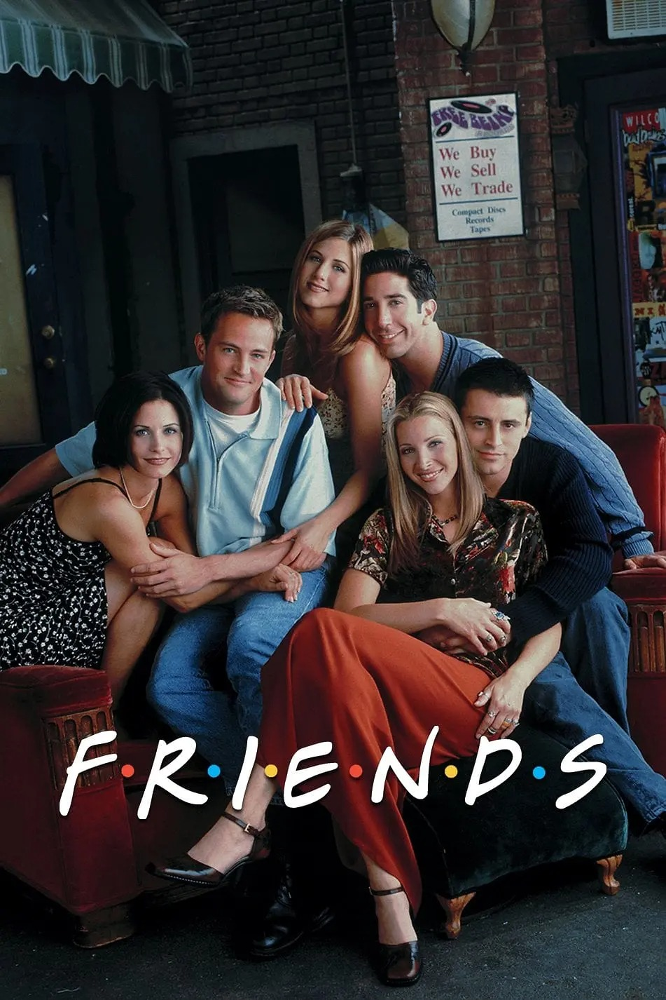
又名：都市六人行；
IMDb: tt0108778；
故事开始在center perk 咖啡馆里，婚礼上落荒而逃的瑞秋闯进来寻找老同学莫妮卡。莫妮卡的哥哥刚刚离婚，而他从小暗恋的人正是这个落跑新娘瑞秋。瑞秋在莫妮卡家住了下来，决定不在做爸爸的女孩儿，真正的步入社会，于是在其他老友的帮助下，她上路了，从二十多岁初入社会，到三十多岁成家立业，他们一走就是十年。十年间风风雨雨，在嬉笑怒骂中，在离别团聚中，他们向我们讲述着友情、爱情还有生活。让我们和他们一起开怀大笑或是黯然神伤。 via 豆瓣；
推荐理由：豆瓣影评9.4高分，而第10季早已在2003年大结局，时隔18年，2021年重聚时刻，火爆全网；
出品方：www.friendstv.com；
豆瓣链接：老友记；
在线观看：毒奶搜索；Netflix 1-10季；HBO 重聚特辑；
出品方：www.friendstv.com；
豆瓣链接：老友记；
在线观看：毒奶搜索；Netflix 1-10季；HBO 重聚特辑；
如果可以，我愿意给它6星。 via 无非 2007-12-03 老友记第一季
怨不得那么多人不忍别离，如果真的看了十年，恐怕比大多数生活中的朋友还要认识更久。生活大爆炸会出十季吗？ via 风向未来吹去 2010-09-09 老友记第十季
他们六人哪怕就是在摄像机前啥话也不说坐一个小时，我也要怒刷五星，这场面太美好了好吗！ via 独爱人山人海 2021-05-27
老友记重聚特辑 Friends: The Reunion (2021) 豆瓣 9.4分高分！奈斯！
老友记重聚特辑 Friends: The Reunion (2021) 豆瓣 9.4分高分！奈斯！
老友记重聚特辑可在爱奇艺/腾讯视频观看；HBO也可以；
XX. 小谢尔顿（2017-2023）

Young Sheldon；CBS在新喜剧上表现无力下把歪脑筋动到《生活大爆炸 The Big Bang Theory》的Sheldon身上，早前他们宣布开发《生活大爆炸》衍生前传剧，現CBS确定预订命名为《小谢尔顿 Young Sheldon》的衍生剧，顾名思义就是以Sheldon Cooper 为主角。该剧定于17-18年度播出。 via 豆瓣电影；
感觉比生活大爆炸更好看，谢耳朵童靴的少儿时代不能更好玩。一个高智商热衷学到知识的小鬼，他真的是身上住进了一个成年人的灵魂。20分钟有点短了，看不够。妈妈回击别人后靠在她身上，爸爸坦诚自己被开除有点难过后脱了手套牵他的手……天啊，小谢耳朵简直是个小暖男！ via 嘀嘀嘀嘀嘀 看过 2017-09-27 20:59:42
XXI. 了不起的麦瑟尔夫人（2017-2023）
故事发生在二十世纪五十年代的美国，米琪（蕾切尔·布罗斯纳罕 Rachel Brosnahan 饰）和丈夫乔伊（迈克尔·泽根 Michael Zegen 饰）结婚多年，两人共同抚养着他们的孩子，生活可谓是幸福而又美满。乔伊一直想要成为一名脱口秀演员，每周末，他都会前往俱乐部登台表演。然而，乔伊的脱口秀事业一直都不温不火。 via 豆瓣电影；
推荐理由：豆瓣均分8.8分；
五星，节奏明快，美术造型服装道具讲究，台词精彩，主配角都好，drama与黄金时代歌舞片元素结合。当年纸牌屋一见到女主就非常惊艳，恭喜终于熬出头！虽然希望夫妻重圆，但编剧一定不会那么写。明年见，努力奋斗自强不息的离婚女人Mrs. Maisel！补：恭喜获金球奖+艾美奖+亚马逊有钱。 via TM1001 看过 2017-10-30 16:33:51
主理人序：比国内的妖艳贱货不要好太多！
XXII. 暗黑 Dark（2017-2020）
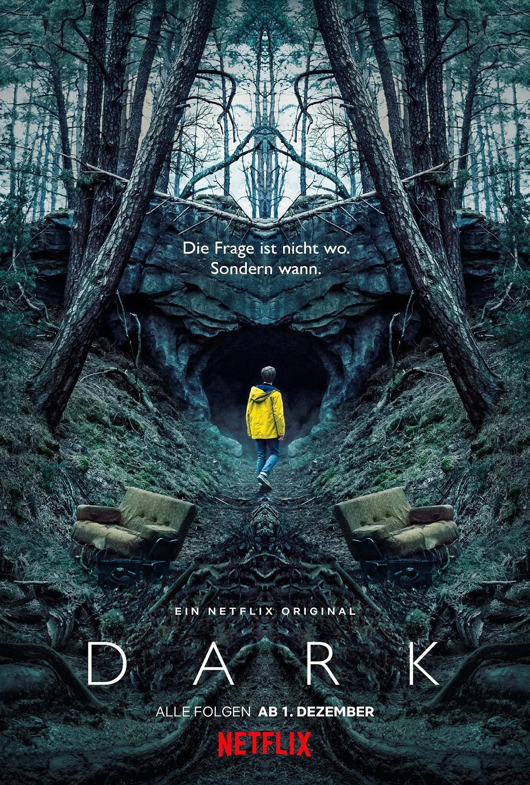
一个消失的孩子让4 个家庭发现了一个离奇古怪、跨越三代人的秘密，他们开始疯狂地寻找着答案。
前五集是德味斯蒂芬金，后面的展开和格局比金不知高到哪里去😂 > > 怪奇物语，与之相比怪奇物语真是充满了美国人的蠢与天真。 via ABoldOne 2018-09-28；
XXIII. 婚姻故事 Marriage Story (2019)
讲述了结婚多年并育有一子的戏剧导演查理和女演员妮可因工作分居而不得不走向离婚，在这场为了争夺抚养权的离婚拉锯战中，关于爱情、婚姻和家庭真实感人的细枝末节牵动人心。两人的关系又将何去何从？
临近片尾的一幕，已有新欢的Nicole听到Charlie要搬来洛杉矶定居时两人相视无言，她随即又略有哽咽，此幕应该是全片最细腻又最有力的一幕了。它分别讲述了两件痛苦的事：当一个人已经停止她一直的期待时她所追求的事却意外地达成了，以及当一个人终于学会为她人牺牲自己时他想为之奉献的人却已经离去。电影在一次次的谈话中慢慢揭露双方的精神世界，女方在婚姻中有多退让在离婚时就有多狠毒，男方在婚姻中有多自私在离婚时就有多不知所措。到了结尾，无论观众更倾向离婚的哪一方，都不会觉得另一方是在无理取闹甚至还能共情另一方。本片和《蓝色情人节》在爱情破灭这个题材达到了两种不同类型的完美（一个始于相互欣赏的关系，一个始于不对等的恋爱关系。我想这也是Nicole最终还能和Charlie做朋友的缘故吧）。 via Euthyphro 看过 2019-11-20
XXIV. 超感猎杀(2015-2017)
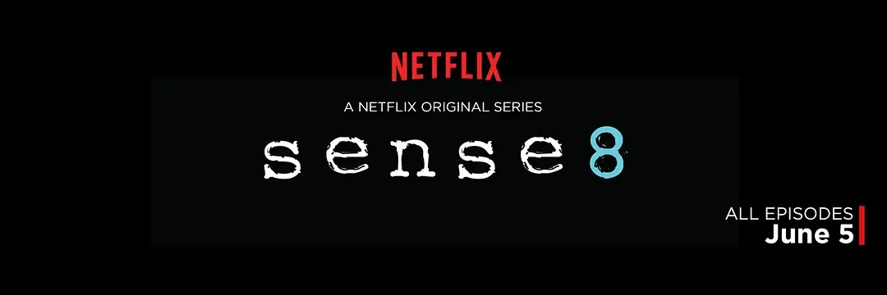
又名超感八人组 / 超感八人 / 第八感 / 超感8人组；本剧由《黑客帝国》系列和《云图》导演沃卓斯基姐妹与《巴比伦5号》编剧、著名制作人J·迈克尔·斯特拉辛斯基共同监制此剧，讲述来自不同城市的八位陌生人，不同身份，不同取向，因为某个神秘事件实现通感，不仅共享情感和思想，还能共享语言和技能。一方面，有个神秘人想将这八个人聚集在 一起；另一方面，一个神秘组织又使尽一切手段猎杀他们。他们必须齐心协力，杀出一条生路，找寻超感真相。
这部剧是一个信号，告诉我那些我想坚信却又时常让我陷入自我怀疑的东西并不孤独与虚无。即使永远无法感应到自己的Sense8，他们也一定是实实在在的存在——和我仰望同一条星河，被同一个太阳照耀，感受到彼此同样的感受。这让人高兴得掉泪。 via 萨嘎摩多熊猫桑 看过 2015-06-12
好好看！这种题材真的没见过，说想云图的我表示不同意，云图是将几个人的生活纵向穿插，这个是横向穿插。片中的gay 和les感情都好美好。ps看这个片子你还恐同你真的是快吃药吧！ via 又双叒叕看到你 看过 2015-06-09
XXV. 浴血黑帮 Peaky Blinders （2013-2022）
浴血黑帮第一季/二/三/四/五/六季来啦！
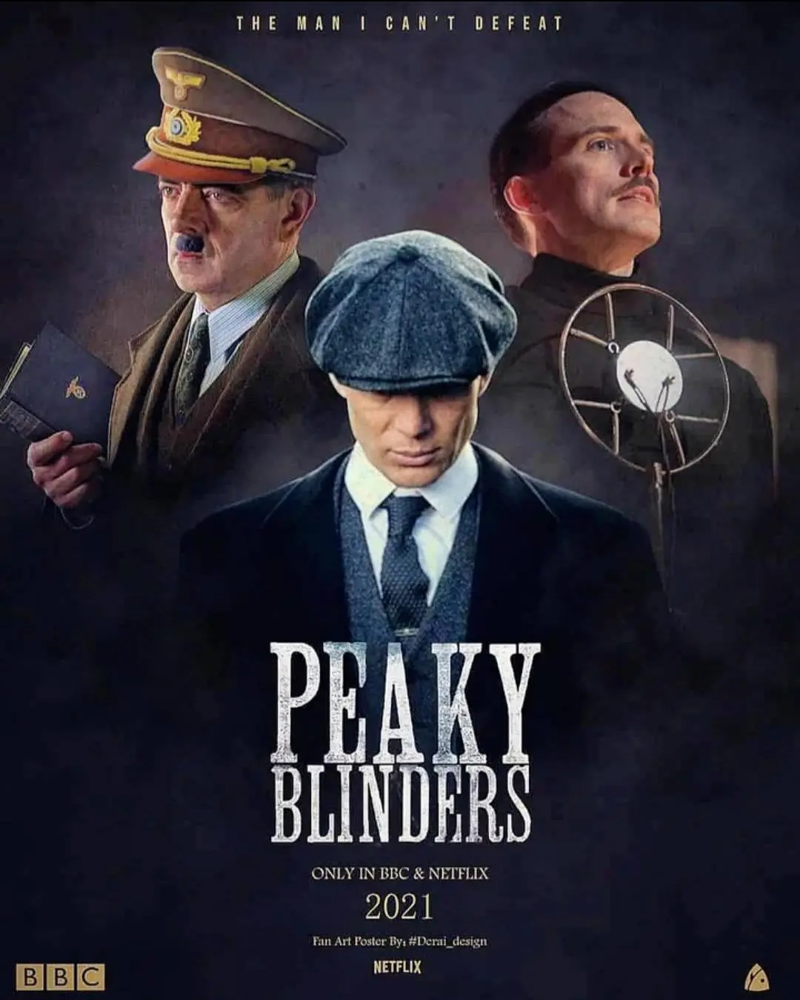
《浴血黑帮》讲述了战后伯明翰地区传奇黑帮家族Peaky Blinders的故事。时间要追溯到1919年，家族成员有一大嗜好，就是将剃刀刀片缝进他们帽子的帽檐之间，这也是“剃刀党”的名称由来。斯里安·墨菲将饰演一名残酷的黑帮份子Tommy Shelby ，是家族兄弟的领袖，嗜血无情。在那个时代，退伍军人、革命者和罪犯，都在社会底层挣扎生存。而当贝尔法斯特的警方负责人开始介入时，Tommy和他的黑帮势力制造出的恐怖统治开始了倾斜。 via 豆瓣电影；
豆瓣评分：平均 9.1分；
一開頭就是粵語 必須講句 是我看這麼多英美劇里最標準的發音了 via 幸好及時捂住臉 看过 2013-09-14 12:52:41
浴血黑帮第一季/二/三/四/五/六季 在线观看：欧乐影院；毒奶搜索；
XXVI. 国土安全 Homeland（2011-2020）
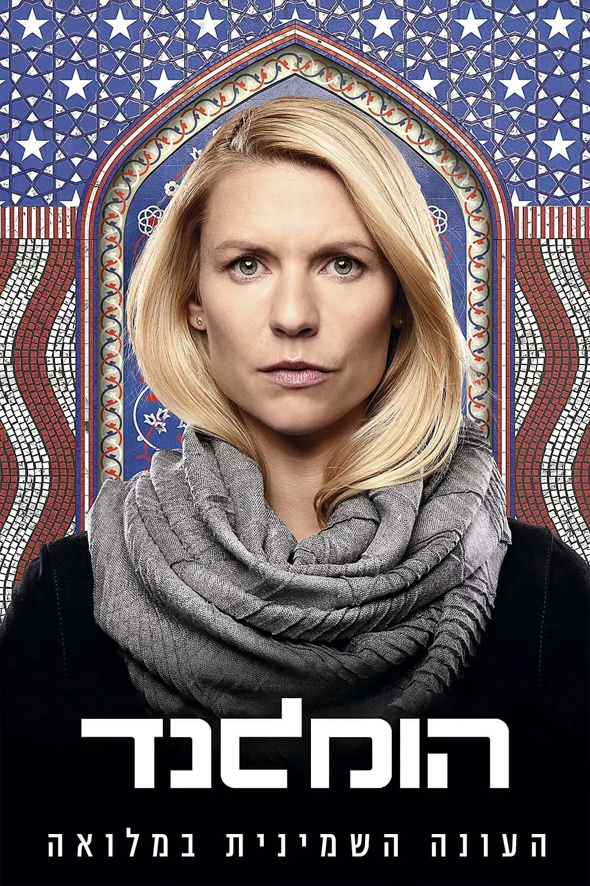
中情局反恐事务的特工Carrie（克莱尔·丹妮丝 Claire Danes 饰）在中东地区执行任务时，她的线向她透露了一个惊人的秘密：一名被俘的美军士兵已经变节，现在为基地组织效力，准备在美国本土策划发动恐怖袭击。几个月后，美国海军陆战队根据线报在阿富汗发现了被俘近九年的Nicholas Brody中士（戴米恩·路易斯 Damian Lewis 饰），荣归故里的Brody受到英雄般的礼遇。同时，Carrie也被中情局调回国内工作，并坚信Brody就是那个已经变节的士兵，从而暗中展开调查。 via 豆瓣电影；
豆瓣评分：平均 8.4分；
国土是促使我选择政治学(political science)博士，专攻国际冲突和内部动乱的原因之一。上一季到这一季之间的两年时间读写了大量关于中东地区论文。所以说这剧改变我人生都不为过。Black 看过 2020-02-24 10:41:24
越往后越好看 2011-12-20 23:38:27
国土安全 Homeland（1-8季）在线看：毒奶搜索；
XXVII. 巴里·林登 Barry Lyndon (1975)
爱尔兰，Redmond Barry(瑞安·奥尼尔 Ryan O'Neal 饰）从小和母亲寄居在舅舅家，后来爱上了他的表姐Nora。Nora的父亲却想把她许配给一个英格兰将军John Quin。于是Barry向Quin提出决斗，决斗中Barry射中了Quin，误以为将他杀 死了，匆忙逃离家乡。路上他遭遇抢劫，走投无路只能加入英国军队。在军队中他才得知，其实Quin并没有死。Barry从英军中出逃，却加入了普鲁士军。战争结束后他成了普鲁士军官Potzdorf的心腹，更让他去监视一个在普鲁士的爱尔兰间谍。Barry却和这个爱尔兰骑士惺惺相惜，爱尔兰骑士带他出入赌场，收获颇丰。Barry觉得自己应该找个有钱的女人，于是盯上了Lyndon爵士的夫人Lady Lyndon。Lyndon爵士病重身亡，一年后，Barry和Lady Lyndon结婚，也成了一名贵族，改名为Barry Lyndon。但Lyndon爵士和Lady Lyndon的儿子Bullingdon却十分不喜欢Barry，Barry也预感到自己的未来将会毁于Bullingdon手中.....
每一个镜头都可以装上画框，挂到美术馆里去。 via Jean 看过 2006-10-22
XXVIII. 2001太空漫游 2001: A Space Odyssey (1968)
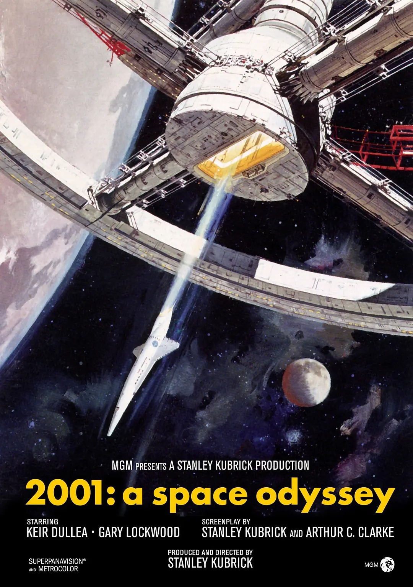
这部影片是库布里克花了四年时间制作的充满哲学命题的鸿篇巨制。一块大黑石树立在史前人类的面前，他们刚刚开始认识工具，进入到进化的里程碑。同样的黑石还在宇宙多处出现，它们矗立在月球上，漂浮在太空中，带着某种神秘的寓意。
现在这个年代没人敢如此玩观众了。 via 单线程青年 看过 2009-01-23
现代科幻电影的开山之作，文明进化的哲学片，史诗里的史诗。人类的渺小与广袤的宇宙相对比，更加深了我们对于自身命运的思考。当华彩乐章奏响的时候，生命的思维在没有起点，没有终点的宇宙里漫游，伸向无限的未知，探索那终极的意义。伟大的电影不朽，伟大的Kubrick不朽。 via Lan~die 看过 2006-10-07
XXIX. 机场支持（Netflix/HBO/Disney+..）

SoCloud

机场创建于：2019年10月；
支持协议：VMess；
流媒体适用：主流媒体全解锁（DAZN、Netflix、Disney+、Hulu、HBO）/Youtube4K稳定5-10w+/阿根廷节点；
目前可用状态：可用；
更新时间：2021年12月14日；
购买建议：月付，季付，半年付，年付均可；
任意门；
支持协议：VMess；
流媒体适用：主流媒体全解锁（DAZN、Netflix、Disney+、Hulu、HBO）/Youtube4K稳定5-10w+/阿根廷节点；
目前可用状态：可用；
更新时间：2021年12月14日；
购买建议：月付，季付，半年付，年付均可；
任意门；
版权属于：毒奶
联系我们：https://limbopro.com/6.html
毒奶搜索：https://limbopro.com/search.html
毒奶导航：https://limbopro.com/daohang/index.html本文链接：https://limbopro.com/archives/15845.html
本文采用 CC BY-NC-SA 4.0 许可协议，转载或引用本文时请遵守许可协议，注明出处、不得用于商业用途！